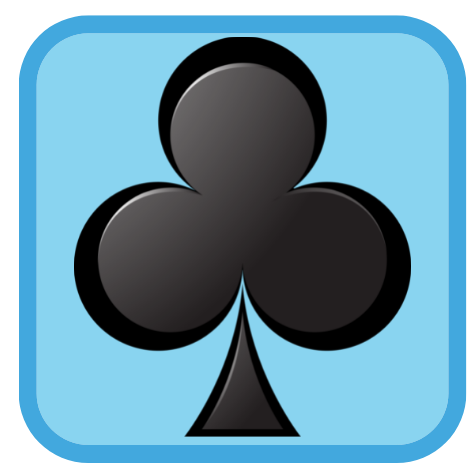
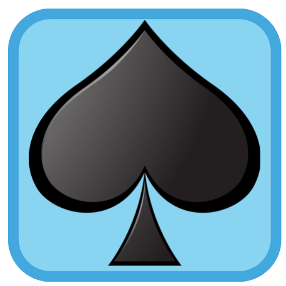
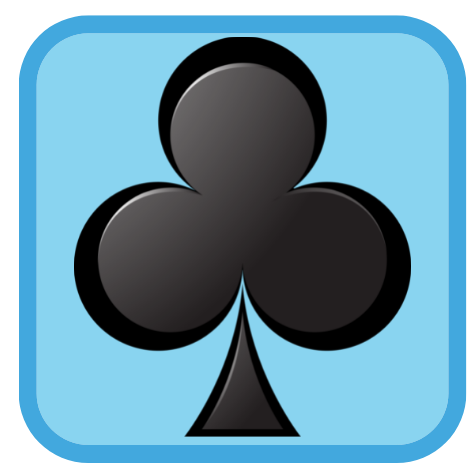
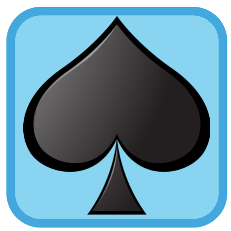

Uputstvo igre
Igrica skocko je igra znakovima u dva igraca. Cilj igre je pogoditi kombinaciju zadatu od protivnika u najvise 7 pokusaja za maksimalno 60s.
Svakom igracu na raspolaganju je 6 razlicitih znakova:
 





Na pocetku igre, svaki igrac zadaje kombinaciju od 4 znaka protivnickom igracu.
Kombinacija sadrzi 4 proizvoljna znaka uz mogucnost ponavljanja.
Znak se ubacuje u kombinaciju pritiskom na ikonicu odgovorajuceg znaka.
Dugme
random
izgenerisace proizvoljni znak.
Unesena kombinacija ponistava se pritiskom na ponisti
Kombinacija se potvrdjuje pritiskom na dugme potvrdi
.
Kombinaciju prvo unosi igrac 1, pa igrac 2.
Igra pocinje nakon sto oba igraca potvrde kombinacije.
Svaki igrac zapocinje igru pritiskom na dugme
start
sto startuje stopericu koja odbrojava proisteklo vreme.
Igraci igraju poteze naizmenicno. Jedan potez igraca sastoji se u odabiru kombinacije od 4 znaka pritiskom na ikonice sa zeljenim znakom.
Zeljena kombinacija se ispisuje u redu koji odgovara tekucem potezu.
Pritiskom na dugme
=>
proverava se unesena kombinacija.
Kvadratici pored prikazuju koliko znakova je pogodjeno i da li su na mestu ili ne.
( oznacava da je neki znak pogodjen i na mestu, a da je pogodjen i nije na mestu).
Igrac predaje potez drugom igracu odmah po proveri kombinacije.
Igra se zavrsava u jednom od 3 scenarija:
1. Jedan od igraca je pogodio kombinaciju. Prvi igrac koji pogodi je pobednik.
2. Oba igraca su istrosili moguce pokusaje. Igra je neresena.
3. Jednom igracu je isteklo vreme. Drugi igrac kome je preostalo vremena je pobednik.
Nova igra zapocinje pritiskom na dugme
1. Jedan od igraca je pogodio kombinaciju. Prvi igrac koji pogodi je pobednik.
2. Oba igraca su istrosili moguce pokusaje. Igra je neresena.
3. Jednom igracu je isteklo vreme. Drugi igrac kome je preostalo vremena je pobednik.
Nova igra zapocinje pritiskom na dugme
nova igra